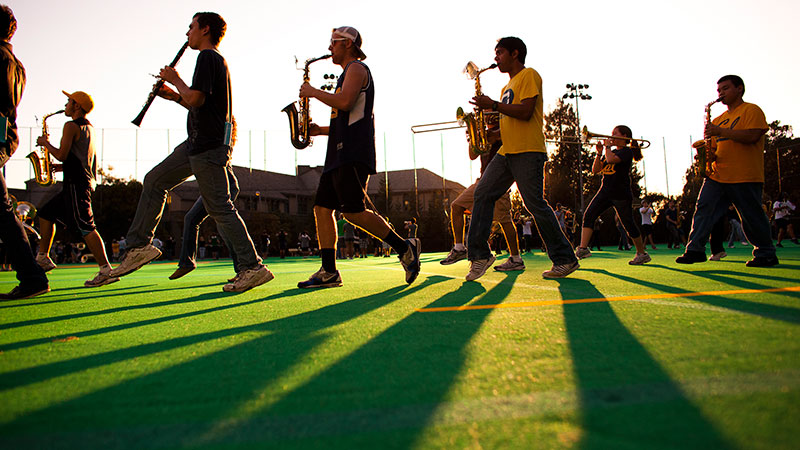

2021
In the wake of the 2020 pandemic, and still grappling with its socio economic fallout, Extension fully embraces an “Online First” strategy with the objective of creating better access to learners in the San Francisco Bay area as well as across the U.S. and around the globe. By assuming its role as global representative of the university for study away and study abroad partnerships, Extension is also investing in institutional partnerships to build meaningful study pathways within the U.S. and internationally. Finally, to provide more access to college, Extension plans to develop Pre-Collegiate and K-12 offerings with defined pathways into partner colleges.
